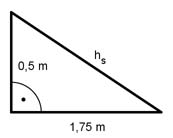

Aufgabe 233 Ein Gartenpavillon hat ein aufgesetztes quadratisches Pyramidendach mit einer Grundseite von 3,5 m und einer Höhe von 0,5 m. Wie viel m2 Stoff braucht man zur Abdeckung, wenn mit 16% Verschnitt gerechnet wird? Wie schwer wird es, wenn 1 m2 180 g wiegt?

hs2 = 0,52 m2 + 1,752 m2 hs2 = 3,3125 m2 |√ hs = 1,82 m 3,5 m * 1,82 m AStoff = 4 * ------------------ = 12,74 m2 2 16% Verschnitt entspricht Prozentfaktor 1,16 Anötig = 1,16 * 12,74 m2 = 14,8 m2 180 g = 0,18 kg m = AStoff * 0,18 kg/m2 = = 12,74 m2 * 0,18 kg/m2 = 2,29 kg